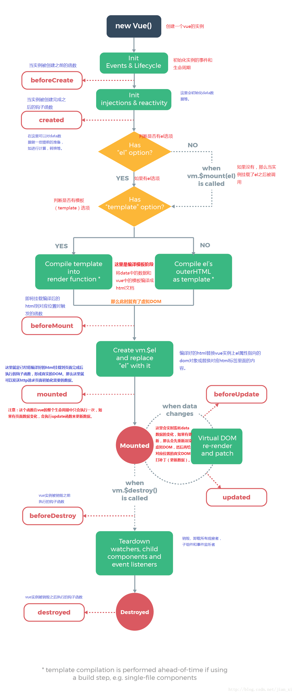

github地址：https://github.com/qnqgit/vue_html <----欢迎访问，喜欢记得start一下。
-
1.什么是Vue?
Vue是一套用于构建用户界面的渐进式框架。与其它大型框架不同的是， Vue 被设计为可以自底向上逐层应用。Vue 的核心库只关注视图层，不仅易于上手， 还便于与第三方库或既有项目整合。另一方面，当与现代化的工具链以及各种支持类库结合使用时， Vue 也完全能够为复杂的单页应用提供驱动。
-
2.Vue的有哪些特点？
（1） 简洁 （2） 轻量 （3）快速 （4） 数据驱动 （5） 模块友好 （6） 组件化
-
3.MVVM模式
Model-View-ViewModel Model层代表的是模型、数据，可以在Model层中定义数据修改和操作的业务逻辑。 View层代表的是视图、模版，负责将数据模型转化为UI展现出来。 ViewModel层连接Model和View。
-
4.什么是双向数据绑定？
如果用户更新了View，Model的数据也自动被更新了，这种情况就是双向绑定。
-
5.双向数据绑定的原理(点击查看)
采用数据劫持结合“发布者-订阅者”模式的方式，通过Object.defineProperty()来劫持各个属性的set和get， 在数据变动时发布消息给订阅者，触发相应的监听回调。
-
6.SPA(单页面应用)
它将所有的活动局限于一个Web页面中，仅在该Web页面初始化时加载相应的HTML、JavaScript 和 CSS。 一旦页面加载完成了，SPA不会因为用户的操作而进行页面的重新加载或跳转。 而是利用 JavaScript 动态的变换HTML的内（采用的是div切换显示和隐藏），从而实现UI与用户的交互。
-
7.单页面应用的优缺点
优点：
1、具有桌面应用的即时性、网站的可移植性和可访问性。
2、用户体验好、快，内容的改变不需要重新加载整个页面，web应用更具响应性和更令人着迷。
3、基于上面一点，SPA相对对服务器压力小。
4、良好的前后端分离。SPA和RESTful架构一起使用，后端不再负责模板渲染、输出页面工作，web前端和各种移动终端地位对等，后端API通用化。
5、对前端人员javascript技能要求更高，促使团队技能提升。
缺点：
1、分功能模块的鉴权不好实现。
2、不利于SEO。
3、初次加载耗时相对增多。
4、导航不可用，如果一定要导航需要自行实现前进、后退。
5、对开发人员技能水平、开发成本高。
-
8.如何解决SPA首屏加载缓慢的问题
(1)、路由懒加载
(2)、CDN资源引入
...
-
9.实现前端路由的方式：
(1)hash: 即地址栏 URL 中的 # 符号（此 hash 不是密码学里的散列运算）。 比如这个 URL：http://www.abc.com/#/hello，hash 的值为 #/hello。 它的特点在于：hash 虽然出现在 URL 中， 但不会被包括在 HTTP 请求中，对后端完全没有影响，因此改变 hash 不会重新加载页面。
(2)history: 利用了 HTML5 History Interface 中新增的 pushState() 和 replaceState() 方法。 （需要特定浏览器支持）这两个方法应用于浏览器的历史记录栈，在当前已有的 back、forward、go 的基础之上，它们提供了对历史记录进行修改的功能。 只是当它们执行修改时，虽然改变了当前的 URL，但浏览器不会立即向后端发送请求。
-
10.$router 和 $route 的区别
$router:为VueRouter实例，想要导航到不同URL，则使用$router.push方法
$route:为当前router跳转对象里面可以获取name、path、query、params等
-
11.动态路由
能传递参数的路由模式，由于可以传递参数，所以其对应的路由数量是不确定的，故称之为 动态路由
--->动态路由(友情链接--点击查看)
-
12.生命周期(vue实例从创建到销毁的过程)
beforeCreate:创建前
created:创建后
beforeMount:挂载前
mounted:挂载后
beforeUpdate:更新前
updated:更新后
beforeDestroy:销毁前
destroyed:销毁后
--->生命周期图钩子函数--如图示：
 -
13.computed计算属性和methods区别
(1) computed是响应式的，methods并非响应式。
(2) 调用方式不一样，computed定义的成员像属性一样访问，methods定义的成员必须以函数形式调用。
(3) computed是带缓存的，只有其引用的响应式属性发生改变时才会重新计算，而methods里的函数在每次调用时都要执行。
(4) computed中的成员可以只定义一个函数作为只读属性，也可以定义get/set变成可读写属性，这点是methods中的成员做不到的
-
14.计算属性和侦听器watch
vue官方文档--计算属性和侦听器<---点击查看
-
15.对vuex的理解(vue官网--vuex)
Vuex 是一个专为 Vue.js 应用程序开发的状态管理模式。它采用集中式存储管理应用的所有组件的状态，并以相应的规则保证状态以一种可预测的方式发生变化。
state:
getter:
mutation:
action:
model:
-
16.vue-cli(脚手架)
Vue-cli是快速构建单页应用的脚手架
vue-cli 3 和 vue-cli 2 版本的区别：
(1) npm下载包名不一样：2版本是vue-cli，3版本是@vue/cli
(2) 启动项目方式命令不一样：2版本是webpack-dev-server，3版本是vue-cli-service
(3) 3版本比2版本少了bulid和config 文件结构更加简单
(4) 3版本支持TypeScript
(5) 如果想在3版本中使用2版本的指令，需要安装桥接工具（npm i -g @vue/cli-init）
-
17.组件化
组件体现的是重用，可以重用页面已经存在的组合
组件是对html 和 css 、js 代码的封装，可重复使用.
组件中的data必须是个函数，因为组件是相互独立的，都有自己的作用域，为了防止全局变量的污染.因此每个实例可以维护一份被返回对象的独立的拷贝
-
18.组件和模块的关系
在组件中可以使用不同的模块
同一个模块可以在不同的组件中使用
-
19.组件通信
(1) 父传子：子组件通过props方法接收数据
(2) 子传父：$emit 触发事件 传递参数，:on 绑定事件
(3) 非父子传值：创建一个vue实例，$emit发布事件，$on 监听事件 （和子传父类似）
-
20.路由守卫
(1)全局前置守卫:router.beforeEach当一个导航触发时，全局前置守卫按照创建顺序调用。守卫是异步解析执行，此时导航在所有守卫 resolve 完之前一直处于 等待中。
每个守卫方法接收三个参数：
-to: Route: 即将要进入的目标 路由对象
-from: Route: 当前导航正要离开的路由
-next: Function: 一定要调用该方法来 resolve 这个钩子。执行效果依赖 next 方法的调用参数
(2)全局解析守卫:用 router.beforeResolve 注册一个全局守卫。这和 router.beforeEach 类似，区别是在导航被确认之前，同时在所有组件内守卫和异步路由组件被解析之后，解析守卫就被调用。
(3)全局后置钩子:router.afterEach,不会接受 next 函数也不会改变导航本身
...